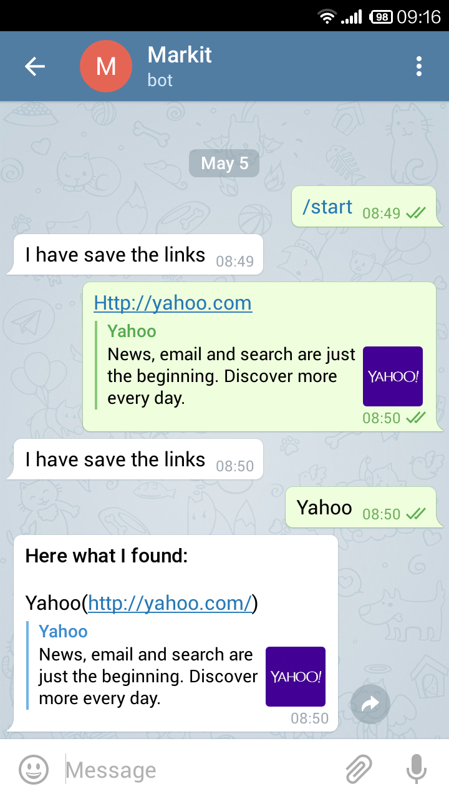

<!--<html>
	<head>
		<link rel="stylesheet" type="text/css" href="style.css">
		<script src="http://use.edgefonts.net/passion-one;source-sans-pro.js"></script>
		<title>MarkitBot</title>
	</head>
	<body>
		<div class = "container">
			<div>
				<h1>MarkitBot</h1>
				<h2>Private bookmarking. Cross-platform and cross-device</h2>
				<p>Markit is your personal Telegram Bot that can store your links for you. And a longer explanation like on Pinboard.</p> 
			</div>
			<h3>Saving your links</h3>
			
			<h3>Retrieving your links</h3>
			<div class = "chat">
				<div class="bubble_left">
					http://.blah and more blah. Let me type more and more. 
				</div>

				<div class="bubble_right">
					Ok noted! Joe Hisaishi has been stored under #music.
				</div>
				<div class="bubble_left">
					second left bubble 
				</div>
			</div>
			<h3>Use MarkitBot</h3>
			<p>Explain how to get Telegram bot</p>
			<div>
				<a class="btn" href = "http://telegram.me/markitbot">Start Bookmarking</a>
			</div>

			
		</div>

	</body>

</html>